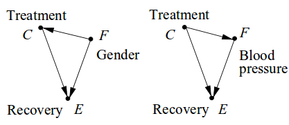

Are you doing anything on 6th May next year? I'm organising an event and need a passionate data scientist to tell it as it is! Let me know if you are interested, and what you would like to talk about - hopefully something technical and thought provoking.
Asking why to:
| Uncover stakeholder motives | [telling it as it is] |
| Infer causal structures | [hopefully technical] |
| Find your purpose | [hopefully thought-provoking] |
Client: I need a model to predict churn.
Younger me: Sure, I'll plow through your data and use deep learning to build the best model ever! It's going to be awesome!
...a few weeks later...
Younger me: The model is ready! It's super-accurate, with the most predictive feature being tenure with the company.
Client: Thanks! We don't really have time to use this model at the moment, as our churn rates are actually pretty low. Let's talk again when this becomes a problem.
Client: I need a model to predict churn.
Current me: Why do you need a model to predict churn? What are you going to do with it?
...a few minutes later...
Current me: So what you really want is to reduce churn, because you assume that preventable churn is costing you $10M per year. Hence, you'd be willing to pay for a system that not only predicts churn, but also schedules the most effective interventions to prevent it based on the customer's personal circumstances.
Client: Correct! Please build me this magical system!
It'll look good on my performance review
Run away!
We always use a model, even if using it is worse than random
Run away, even faster. Sounds like they're unlikely to see business value in data science.
We want to understand what's causing churn
Be careful with your modelling, e.g., short tenure doesn't necessarily cause churn.
| Population size | Recovered? (E) | Recovery rate | ||
| Everyone | ||||
| Treated | C | 40 | 20 | 0.5 |
| Untreated | ¬ C | 40 | 16 | 0.4 |
| Females | ||||
| Treated | F, C | 10 | 2 | 0.2 |
| Untreated | F, ¬C | 30 | 9 | 0.3 |
| Males | ||||
| Treated | ¬F, C | 30 | 18 | 0.6 |
| Untreated | ¬F, ¬C | 10 | 7 | 0.7 |
If we don't know their gender...Yes! P(E|C) > P(E|¬C)
If they're female...No! P(E|C,F) < P(E|¬C,F)
If they're male...No! P(E|C,¬F) < P(E|¬C,¬F)
The explanation for Simpson's paradox should be clear to readers of this book, since we have taken great care in distinguishing seeing from doing. The conditioning operator in probability calculus stands for the evidential conditional "given that we see," whereas the do() operator was devised to represent the causal conditional "given that we do." Accordingly, the inequality P(E|C) > P(E|¬C) is not a statement about C being a positive causal factor for E, properly written P(E|do(C)) > P(E|do(¬C)), but rather about C being positive evidence for E, which may be due to spurious confounding factors that cause both C and E.
Key assumption: Males tend to use the drug more (F → C)
Condition on the confounding variable F: Follow the gender-specific measures and never prescribe C
Different scenario: F is high blood pressure, and the drug may raise blood pressure (C → F)
No point conditioning on F: Follow the overall measures and always prescribe C
F is a specific star sign, and we can't assume it affects drug selection, or is affected by it
No point conditioning on F: Follow the overall measures and always prescribe C
Generally: The decision whether to use F to predict E can't only depend on the data
There is simply no unified philosophical theory of what causes are, and no single foolproof computational method for finding them with absolute certainty. What makes this even more challenging is that, depending on one's definition of causality, different factors may be identified as causes in the same situation, and it may not be clear what the ground truth is.
We know, from first principles, that any causal conclusion drawn from observational studies must rest on untested causal assumptions. Cartwright (1989) named this principle 'no causes in, no causes out,' which follows formally from the theory of equivalent models (Verma and Pearl, 1990); for any model yielding a conclusion C, one can construct a statistically equivalent model that refutes C and fits the data equally well.
Our findings parallel those of previous work and show that endorsement of free-market economics predicted rejection of climate science. Endorsement of free markets also predicted the rejection of other established scientific findings, such as the facts that HIV causes AIDS and that smoking causes lung cancer. We additionally show that, above and beyond endorsement of free markets, endorsement of a cluster of conspiracy theories (e.g., that the Federal Bureau of Investigation killed Martin Luther King, Jr.) predicted rejection of climate science as well as other scientific findings. Our results provide empirical support for previous suggestions that conspiratorial thinking contributes to the rejection of science.